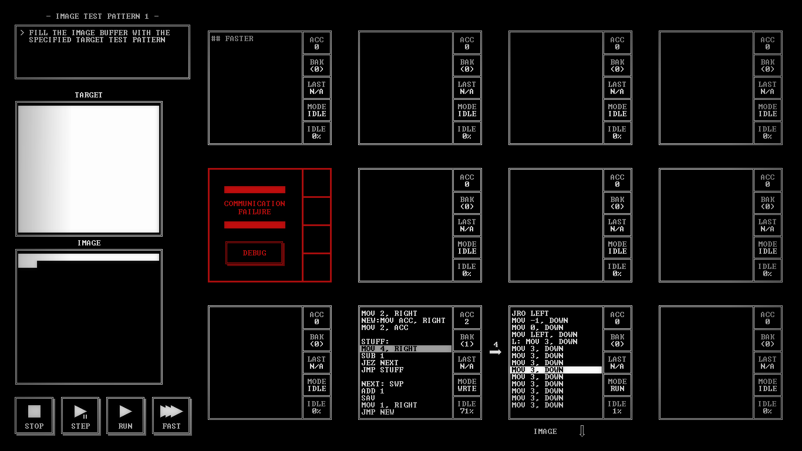
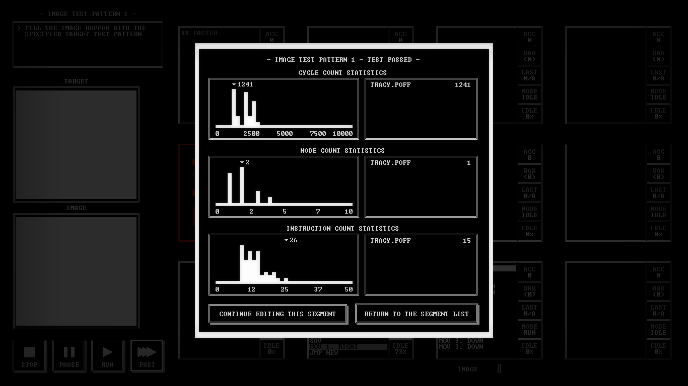

TIS-100

Recently, I saw a new game from Zachtronics Industries, TIS-100, which was released on Steam as an early access title on the first of June. In some ways, calling it a game is overstating it: it's little more than a collection of programming problems, with a little story to give it some structure. The catch is that you're programming in an assembly language on a virtual machine with unusual architecture; problems beyond the simplest will generally require you to take advantage of parallelism (which is the primary distinguishing feature of the VM), resulting in novel solutions for ordinary problems.

Obviously, a game like that has a rather limited target audience. Case in point: I have myself previously created a little VM with a fake assembly language to play with. The game is clearly made just for me, but how many others are likely to be similarly interested? About 11,000,1 so far. It's a minor hit.2
The concept of programming as gameplay isn't new. Indeed, Zachtronics's earlier game, SpaceChem, is also an exercise in parallel programming, though dressed up in fancier clothes. Way back in the mists of time,3 Robot Odyssey challenged players to program the titular robots to solve puzzles. And on the more-programming-than-game end of the spectrum, we have Core War4 and a multitude of web sites in the vein of Project Euler or CodinGame.
I've been enjoying TIS-100, but more than that, I think it's singularly impressive to release a game of this kind. Certainly, there are games that trade on their difficulty (Super Hexagon, I Wanna Be the Guy, etc.) and some that take pride in their difficulty of interaction (Surgeon Simulator, Ampu-Tea, QWOP, etc.), and simple 'retro-style' graphics are de rigueur for indie games, but the very minimalistic functionalism of TIS-100 is astounding.
TIS-100 is difficult because the thinking required to solve the puzzles is difficult. It is perhaps inaccessible, because it consists of nothing else but the tools to solve the puzzle. Its graphics are simple because everything you need to solve the puzzles is a text-mode interactive debugger, and that's what you get. Like a sudoku puzzle or a crossword, TIS-100 is a completely pure puzzle game: the game takes place in your head, and the software keeps score.
It is not by chance that TIS-100 so distinguishes itself from other games. During the production of Infinifactory, Zach Barth, the founder of Zachtronics, wanted to make a game with a smaller team--something more-indie-than-indie--to get back to his roots as an indie developer. The project turned out to be too great in scope, but from its wreckage was salvaged a programming minigame which became TIS-100.5 Viewed as an indie developer's attempt to make something even more indie, with the understanding that it was a small part of something larger, the design makes sense.6
The game's manual, too, reflects the niche targeted by the game. Who reads a manual, you ask? When it is positioned as a technical document describing the instruction set of a virtual machine, the answer to that question is: programmers. The manual is presented as the in-universe manual for the TIS-100 computer, previously the property of the player character's Uncle Randy, including handwritten notes and highlighting. This was part of Zachtronics's attempt to make a game with "an irresistible value proposition. For us, that's a game with a 14-page technical manual that we designed, printed out, marked up and scanned back in again."7 The manual is reminiscent of the feelies accompanying Infocom games, among others, in years past.8

Like its predecessor, SpaceChem, TIS-100 encourages players to perfect their solutions, optimizing for either execution speed, least number of nodes used, or least instructions--goals which are often contradictory, requiring multiple solutions.
Perhaps unsurprisingly, given that it is a game about programming, the players of TIS-100 have created some auxiliary tools, including TIS-100 PAD,9 which allows users to more easily share solutions, and a variety of TIS-100 (the virtual machine, not the game) emulators.10
In addition to this unsolicited community participation, with the release of the specification editor, which allows players to make their own puzzles, a puzzle design contest was announced. Twenty-five puzzles will be selected from the submissions for an official bonus campaign.
The feel of TIS-100 is both nostalgic and quite modern. It's an intriguing combination, and I recommend it to anyone still interested after hearing me call it "a collection of programming problems." Coders, no prior experience with assembly is needed. Others, if you like this game--try coding. You'll probably like that, too.
Bibliography
- [Barth2012]
- Zach Barth, Postmortem: Zachtronics Industries' SpaceChem, Gamasutra (2012-06-13).
- [Dewdney1984]
- Alexander K. Dewdney, In the game called Core War hostile programs engage in a battle of bits, Scientific American 250, 5 (1984), 15--19.
- [McIlroy1971]
- M. Douglas McIlroy & Robert Morris & Victor Vyssotsky, Letter to Aleph-Null (1971-06-29).
- [Wawro2015]
- Alex Wawro, 'Things we create tell people who we are': Designing Zachtronics' TIS-100, Gamasutra (2015-06-09).
-
As of this writing, it has 270 positive reviews and 2 negative reviews on Steam. ↩
-
1984, actually. It was released a year later for DOS, according to MobyGames. ↩
-
Also from 1984, described in a Scientific American article, [Dewdney1984]. It's based on a still earlier programming game, Darwin, which was played in 1961 and described publicly in 1972. See [McIlroy1971] for more. ↩
-
The details of TIS-100's inception, and more, are discussed in an interview published by Gamasutra, [Wawro2015]. ↩
-
However, Barth wrote in a post mortem of SpaceChem, [Barth2012], that SpaceChem was too difficult and inaccessible. New titles were forthcoming: "New titles, I might add, that are hopefully more accessible than SpaceChem!" ↩
-
From [Wawro2015]. ↩
-
Back when you got something for your money! Even application software used to have much more bulk to it. ↩
-
Just have a look at the results of this search. But watch out, if you'd like to avoid spoilers! The puzzle solutions are code, after all, so a number of people have posted those, as well. ↩